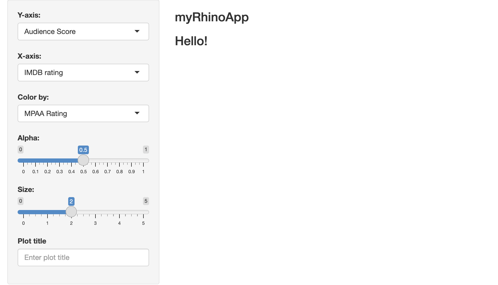

This is the fifth and final post on creating shiny apps with various frameworks. In this post, I’ll build a ‘high quality, enterprise-grade’ shiny app using the rhino package and framework.
ALERT!
This post is currently under development. Thank you for your patience.
Framework comparisons
This series has focused on the following technical areas: Start, Build, and Use.
Start covers the steps required to begin building a shiny app with the framework (from the console and IDE), and any additional packages or dependencies.
Build covers the development process, which includes writing and storing code, data, external resources (like CSS or JavaScript), testing, etc.
Use shows how developers can launch their application using the given framework/package locally (i.e., within the RStudio (Posit) IDE), common workflow tips, and any points I found confusing.
In part one, I built a ‘minimal’ shiny app (VanillaApp)
In part two, I structured the shiny application as an R package using usethis and devtools, myPkgApp.
The GitHub repo with all shiny app setups is here.
myRhinoApp
rhino is a package developed by Appsilon (yes, shinyconf Appsilon) for “Build[ing] high quality, enterprise-grade Shiny apps at speed.”
rhino differs from the previous frameworks and methods in a couple important ways. First, a rhino application is not an R package. Instead, rhino shiny apps rely on box for managing importing dependencies (instead of the DESCRIPTION and NAMESPACE). Second, rhino requires node.js, open-source JavaScript runtime environment.
Start
To create a new rhino application, select Project > New Project > New Directory, and Shiny Application using rhino
The New Project Wizard will require a Directory name and subdirectory. I’ve also left Github Actions CI selected (the default)
Figure 1: myRhinoApp
Click Code to see output
Code
* Initializing project ...* Discovering package dependencies ... Done!* Copying packages into the cache ... Done!The following package(s)will be updated in the lockfile:# CRAN ===============================- R.cache [*-> 0.16.0]- R.methodsS3 [*-> 1.8.2]<<<<<<< OMITTED >>>>>>>>- xtable [*-> 1.8-4]- yaml [*-> 2.3.7]# GitHub =============================- box [*-> klmr/box@dev]The version of R recorded in the lockfile will be updated:- R [*] -> [4.2.2]* Lockfile written to '~/projects/myRhinoApp/renv.lock'.✔ Initialized renv.✔ Application structure created.✔ Unit tests structure created.✔ E2E tests structure created.✔ Github Actions CI added.
This initializes the new rhino app by opening the .Rproj file in RStudio.
If I wanted to create the myRhinoApp application from the console, I would use the following:
✔ Rproj file created.* Initializing project ...* Discovering package dependencies ... Done!* Copying packages into the cache ... Done!The following package(s)will be updated in the lockfile:# CRAN ===============================- R.cache [*-> 0.16.0]- R.methodsS3 [*-> 1.8.2]<<<<<<< OMITTED >>>>>>>>- xtable [*-> 1.8-4]- yaml [*-> 2.3.7]# GitHub =============================- box [*-> klmr/box@dev]The version of R recorded in the lockfile will be updated:- R [*] -> [4.2.2]* Lockfile written to '~/projects/myRhinoApp/renv.lock'.✔ Initialized renv.✔ Application structure created.✔ Unit tests structure created.✔ E2E tests structure created.✔ Github Actions CI added.
What’s the difference?
Both methods create the same structure, using rhino::init() will not automatically open the new rhino application project file (~/projects/myRhinoApp/myRhinoApp.Rproj), so I have to navigate to this file and open it.
The initial folder structure for a new rhino app is below:
logic/__init__.R is originally blank, but provides a link to the website section on project structure
# Logic: application code independent from Shiny.# https://go.appsilon.com/rhino-project-structure
static/: the static/ folder will contain external resources (like JavaScript files) and is similar to the sub-folders in inst/ from golem and leprechaun.
Use these file in the UI with:
tags$script(src ="static/js/app.min.js")
styles/: the styles/ folder will hold custom styles (CSS and HTML) in the styles/main.css file (which is initially blank)
If box’s syntax looks strange–don’t worry! It looked strange to me too at first. But it’s actually something special with those roxygen2 tags. I’ll cover it more in the Build section below.
app.R
app.R is the file that will run my application and contains the rhino::app() function.
Do not edit this file!
# Rhino / shinyApp entrypoint. Do not edit.rhino::app()
tests/testthat/ contains the architecture for writing tests with testthat
rhino also has a helper function for running all tests in the testthat/ folder (rhino::test_r())
tests/└── testthat/└── test-main.R
Build
Unlike the previous applications in this series, rhino applications don’t use the NAMESPACE and DESCRIPTION to manage dependencies. Instead, they use the box modules to explicitly import packages and functions
box
rhino apps use box to create modules, which is handy, because it’s specifically designed for writing “reusable, composable and modular R code”
Quick refresher: if I’m building a shiny app,
I install dependencies using install.packages('<package>') (or renv::install('<package>'))
When I want to use an installed package, I run library(<package>), which loads the package namespace ‘and attach[es] it on the search list’ (or I can use <package>::<function>)
If the application gets converted into an R package, I track these dependencies using roxygen2 tags @importFrom or @import (which are converted into NAMESPACE directives)
I also include them in the DESCRIPTION under Imports:
So, I run library(<package>) to load the entire package namespace when I want to use a function, but it’s recommended I use @importFrom to specify the package functions if I’m developing my own R package.
Put another way,
“If I only need one or two items from a package, why am I loadingeverythingin the namespace with library()?“
This is where box comes in–it’s designed to ‘completely replace the base R library and require functions’.
box handles dependencies by ‘writing modular code’ and is perhaps best summarized in the following quote from The Zen of Python (also on the package website)
‘explicit is better than implicit.’
A box module is essentially just an R script in a folder. However, in box::use(), instead of loading packages and functions using library() or ::, I can encapsulate and explicitly import packages and functions in these R scripts using the syntax package[function].
The module below imports the foo() and bar() functions from the pkg package in the mod.R file (in the box/ folder)
# contents of box/mod.R#' @exportbox::use(pkg[foo, bar])
I can now access foo() and bar() from mod.R using box::use(box/mod):
Below I attempt to use tidyverses tidyverse_logo() function
tidyverse_logo()
Error in tidyverse_logo(): could not find function "tidyverse_logo"
The error is expected, because dplyr has been installed, but hasn’t been loaded.
In a box module, I import the tidyverse_logo() from tidyverse (without using library() or ::), by creating a logo.R file in a tidy folder. In logo.R, I include box::use() and the following code:
I also include #' @export on the preceding line:
# contents of tidy/logo.R#' @exportbox::use(tidyverse[tidyverse_logo])
Note that tidyverse_logo() is still not loaded outside the logo module
tidyverse_logo()
Error in tidyverse_logo(): could not find function "tidyverse_logo"
I can also include (or wrap) box::use() inside custom functions, and then call these when I’ve imported the module:
tidy/plogo.R imports tidyverse_logo()inside a custom function, print_logo()
Note that to use a packages/functions from a module, you must include #' @export from roxygen2 (in the line above):
# contents of tidy/plogo.R#' prints tidyverse logo#' @exportprint_logo<-function(){# import pkg[fun] inside functionbox::use(tidyverse[tidyverse_logo])# use funtidyverse_logo()}
I load the module into the environment with box::use(path/to/module)
Also note print_logo() doesn’t exist outside the plogo module:
print_logo()
Error in print_logo(): could not find function "print_logo"
This is what is meant by encapsulation
box modules can also import functions and packages using aliases.
The example below (tidy/tidy_logo.R) exports tidyverse_logo() as tidy_logo() and print_logo()
Both the contents of box::use() and print_logo() need the #' @export tag
# contents of tidy/tidy_logo.R#' import alias tidyverse logo#' @exportbox::use(tidyverse[tidy_logo =tidyverse_logo])#' prints tidyverse logo#' @exportprint_logo<-function(){# use fun aliastidy_logo()}
After I load the module with box::use(), I can see both functions in tidy_logo using ls()
This has been a very brief overview of box, so I highly recommend consulting the box website and vignettes (especially “the hierarchy of module environments”). The rhino website also has a great overview on using box with shiny apps (I also have a collection of box module examples in this repo.)
Modules
Now that I’ve covered a bit on how box modules work, I am going to create the application modules. New modules should be created in the app/view/ folder.
The first module we’ll create is the app/view/inputs.R module for collecting the user inputs
The code below is placed in app/view/inputs.R
Click Code to see app/view/inputs.R
Code
# app/view/inputs.R# define module functionsbox::use(shiny[NS, tagList, selectInput, h3,sliderInput, textInput, moduleServer, reactive],)#' input values UI#' @exportui<-function(id){ns<-NS(id)tagList(selectInput( inputId =ns("y"), label ="Y-axis:", choices =c("IMDB rating"="imdb_rating","IMDB number of votes"="imdb_num_votes","Critics Score"="critics_score","Audience Score"="audience_score","Runtime"="runtime"), selected ="audience_score"),selectInput( inputId =ns("x"), label ="X-axis:", choices =c("IMDB rating"="imdb_rating","IMDB number of votes"="imdb_num_votes","Critics Score"="critics_score","Audience Score"="audience_score","Runtime"="runtime"), selected ="imdb_rating"),selectInput( inputId =ns("z"), label ="Color by:", choices =c("Title Type"="title_type","Genre"="genre","MPAA Rating"="mpaa_rating","Critics Rating"="critics_rating","Audience Rating"="audience_rating"), selected ="mpaa_rating"),sliderInput( inputId =ns("alpha"), label ="Alpha:", min =0, max =1, step =0.1, value =0.5),sliderInput( inputId =ns("size"), label ="Size:", min =0, max =5, value =2),textInput( inputId =ns("plot_title"), label ="Plot title", placeholder ="Enter plot title"))}#' input values server#' @exportserver<-function(id){moduleServer(id, function(input, output, session){return(list("x"=reactive({input$x}),"y"=reactive({input$y}),"z"=reactive({input$z}),"alpha"=reactive({input$alpha}),"size"=reactive({input$size}),"plot_title"=reactive({input$plot_title})))})}
Init files
Back in the app/view/ folder, I want to use the app/view/inputs.R function in the app/main.R. I can do this by adding a __init__.R file in the app/view/ folder with the following contents:
# View: Shiny modules and related code.# https://go.appsilon.com/rhino-project-structure#' @exportbox::use(app/view/inputs)
After composing the module in app/view/input.R, I add the input module to the app/main.R file just like the examples above:
Note that I’ve added the necessary functions for using a fluidPage() layout (instead of the default bootstrapPage())
Click Code to see app/main.R
Code
# app/main.Rbox::use(shiny[NS, fluidPage, sidebarLayout, sidebarPanel, mainPanel,tags, textOutput, moduleServer, renderText],)# load inputs module ----box::use(app/view/inputs,)#' @exportui<-function(id){ns<-NS(id)fluidPage(sidebarLayout(sidebarPanel(# use inputs module UI ----inputs$ui(ns("vals"))),mainPanel(tags$h3("myRhinoApp"),tags$h3(textOutput(ns("message"))))))}#' @exportserver<-function(id){moduleServer(id, function(input, output, session){# use inputs module server ----inputs$server("vals")output$message<-renderText("Hello!")})}
After saving both app/view/inputs.R and app/main.R, I can click Run App in app.R and check the output:

Figure 2: inputs.R module
The display.R module will show the graph output, but I know this module will require adding the movies data and the point_plot() function (both of which I’ll cover below).
The point_plot() function definitely meets the definition above, so I will write two modules in app/logic: data for importing the movies data, and plot for creating a scatter plot with point_plot()
app/logic/data.R: imports movies from my GitHub repo with all the shiny frameworks. Using data in box() modules is tricky (and its a known, issue), but this method works for my application.
Click Code to see app/logic/data.R
Code
# contents of app/logic/data.R#' @exportbox::use(readr[get_csv =read_csv, cols])#' @exportmovies_data<-function(){raw_csv_url<-"https://bit.ly/3Jds4g1"# use alias for read_csv()get_csv(raw_csv_url, col_types =cols())}
The second module, app/logic/plot.R, holds the point_plot() function:
Code
# contents of app/logic/plot.R#' point plot function#' @exportpoint_plot<-function(df, x_var, y_var, col_var, alpha_var, size_var){box::use( ggplot2 =ggplot2[...])ggplot( data =df,aes( x =.data[[x_var]], y =.data[[y_var]], color =.data[[col_var]]))+geom_point(alpha =alpha_var, size =size_var)}
The __init__.R file in app/logic contains the following:
Code
# Logic: application code independent from Shiny.# https://go.appsilon.com/rhino-project-structure#' @exportbox::use(app/logic/data,app/logic/plot)
To make sure everything is working, I’ll also include a app/logic/check-point_plot.R file that contains the following:
Code
# contents of app/logic/check-point_plot.R# contents for app/logic/check-point_plot.R# load modules from logic folderbox::use(app/logic/data,app/logic/plot)# import movies datamovies<-data$movies_data()# check point plotplot$point_plot( df =movies, x_var ='critics_score', # as string y_var ='imdb_rating', # as string col_var ='mpaa_rating', # as string alpha_var =2/3, size_var =2)
check-point_plot.R imports the two logic modules (data and plot), creates the movies data, and checks to see if the data and plotting function work:
After saving app/logic/data.R and app/logic/plot.R, I can run the code in check-point_plot.R
Figure 3: app/logic/check-point_plot.R module
The app/view/display.R module can now call box::use() to import the app/logic/data and app/logic/plot.
The app/view/display.R module contains theui and the server functions:
Code
# app/view/display.R# import data and plot modules ----box::use(app/logic/data,app/logic/plot)#' display values ui ----#' @exportui<-function(id){box::use(shiny[NS, tagList, tags, plotOutput])ns<-NS(id)tagList(tags$br(),tags$blockquote(tags$em(tags$h6("The code for this application comes from the ",tags$a("Building web applications with Shiny", href ="https://rstudio-education.github.io/shiny-course/"),"tutorial"))),plotOutput(outputId =ns("scatterplot")))}#' display values server ----#' @exportserver<-function(id, var_inputs){# load plotting, shiny, tools, and stringr functionsbox::use( ggplot2 =ggplot2[...],shiny[NS, moduleServer, plotOutput, reactive, renderPlot],tools[toTitleCase],stringr[str_replace_all])moduleServer(id, function(input, output, session){# use data$movies_data() ----movies<-data$movies_data()inputs<-reactive({plot_title<-toTitleCase(var_inputs$plot_title())list( x =var_inputs$x(), y =var_inputs$y(), z =var_inputs$z(), alpha =var_inputs$alpha(), size =var_inputs$size(), plot_title =plot_title)})output$scatterplot<-renderPlot({# use plot$point_plot() ----plot<-plot$point_plot( df =movies, x_var =inputs()$x, y_var =inputs()$y, col_var =inputs()$z, alpha_var =inputs()$alpha, size_var =inputs()$size)plot+labs( title =inputs()$plot_title, x =str_replace_all(toTitleCase(inputs()$x),"_"," "), y =str_replace_all(toTitleCase(inputs()$y),"_"," "))+theme_minimal()+theme(legend.position ="bottom")})})}
In app/main.R, I can place the display module in call to box::use(), then:
Add display$ui() to the mainPanel()
In the server, the output from inputs$server() is assigned to selected_vars, which becomes the var_inputs input for display$server():
Code
# app/view/main.R# shiny functionsbox::use(shiny[NS, fluidPage, sidebarLayout, sidebarPanel,mainPanel, tags, textOutput, moduleServer,renderText])# import modulesbox::use(# load inputs module ----app/view/inputs,# load display module ----app/view/display)#' myRhinoApp ui#' @exportui<-function(id){ns<-NS(id)fluidPage(sidebarLayout(sidebarPanel(# use inputs module UI ----inputs$ui(ns("vals"))),mainPanel(tags$h3("myRhinoApp"),tags$h3(textOutput(ns("message"))),# use display module UI ----display$ui(ns("disp")))))}#' myRhinoApp server#' @exportserver<-function(id){moduleServer(id, function(input, output, session){# use inputs module server ----selected_vars<-inputs$server(id ="vals")# use display module server ----display$server(id ="disp", var_inputs =selected_vars)})}
After saving app/view/data.R and app/view/display.R files, the app/view/ and app/logic/ folders contain the following modules:
When I click Run App in app.R I should see the following output:
Figure 4: myRhinoApp
External scripts
It’s fairly straightforward to add external resources (i.e., JavaScript, CSS, Sass, etc.) to rhino apps. I’ll use the example from the website to demonstrate because it adds both CSS and JavaScript to the codebase.
The first place to add code is the UI in app/main.R:
Update the call to box::use() and include the layout functions (fluidRow, column, icon)
Update the mainPanel() to include the title, info button, and display module:
Code
mainPanel(fluidRow(column( width =12,tags$h3("myRhinoApp"))),fluidRow(column( width =1, offset =11,# example info button ---tags$button( id ="help-button",icon("info")))),fluidRow(column( width =12,# use display module UI ----display$ui(ns("disp")))))
The CSS added to app/styles/main.css is the container for the button.
The output tells me the app.min.js has been created in app/static/js
app/static/└── js└── app.min.js
Back in app/main.R, I add the onclick to the mainPanel()
Code
mainPanel(fluidRow(column( width =12,tags$h3("myRhinoApp"))),fluidRow(column( width =1, offset =11,# example info button ---tags$button( id ="help-button",icon("info"),# add 'onclick' after rhino::build_sass()# and rhino::build_js() onclick ="App.showHelp()"))),fluidRow(column( width =12,# use display module UI ----display$ui(ns("disp")))))
Now when I save everything and click ‘Run App’ in app.R I should see the info button (and message):
Figure 5: Adding .js to app/js/index.js
Figure 6: Adding .js to app/js/index.js ‘on click’
Use
To run a rhino application, use rhino::app() in the app.R file:
Most of the development takes place in app/logic and app/view (using box modules). The separation of the ‘business logic’ workflow from the ‘app view’ code is similar to the dev folder in golem and leprechaun, but the modules make it easy to move code and functions back and forth between the two folders.
The app/js/index.js and app/styles/main.css are used to include any custom CSS or JavaScript code, but you won’t create any new files (other than index.js and main.css).
New JavaScript or CSS code is placed in app/js/index.js or app/styles/main.css and then the corresponding rhino function is run (rhino::build_js() or rhino::build_sass()). This requires installing node.js.
These functions create output files in app/static/js/app.min.js and app/static/css/app.min.css that are used in the application.